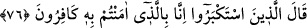
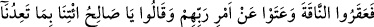
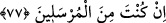

gerçek olduğuna dikkat çekmek için yapmışlardır. Bu cevapla mü’minler sanki şöyle
demek istemişlerdir: “Onun Allah tarafından gönderilmesi hususunda söylenecek bir şey
yok. Çünkü bu, akıllı bir kimsenin şüphe edemeyeceği kadar açık, ona verilen bu
harikulâde büyük mucize düşünce sahibi bir kimseden gizli kalmayacak kadar bârizdir.
Söylenecek söz ona inanmakla ilgilidir. Biz ona inananlarız.” İşte bu cevaba, “üslub-i
hakîm” (hikmetli üslûb) denilir. Bu uslûb, muhataba beklemediği cevabı vermektir.
76. Büyüklük taslayanlar dediler ki: “Biz de sizin inandığınızı inkâr edenleriz.”
“Büyüklük taslayanlar: “Biz sizin inandığınızı inkar edenleriz, dediler.” Bu
sözleriyle kâfirler de mü’minlerin sözüne, “Biz Salih’e indirilene inanmayanlarız.”
demek sûretiyle uygun cevap vermediler. Çünkü böyle bir cevap, Salih (a.s.)’ın Allah
tarafından gönderildiğinin kendileri tarafından bilindiğine ve kabul edildiğine delâlet
eder. Nitekim mü’minlerin sözü buna delâlet etmektedir.
Sanki onlar şöyle demişlerdir: “Onun Allah tarafından gönderilmesi bizce bilinen ve
kabul edilen bir husus değildir. Ortada sadece onun böyle bir iddiası ve sizin ona iman
etmeniz vardır. Biz sizin inandığınızı inkar ediyoruz.”
Böylelikle mü’minler imanlarını, Salih (a.s.)’ın Allah tarafından gönderilmiş
olduğuna, kâfirler ise küfürlerini, mü’minlerin imanına dayandırmışlardır.
Allah Teâlâ, kâfirleri iki yönden yermiştir. Birincisi, büyüklük taslamalarıdır.
Büyüklük taslamak, kendisini olduğundan yüksek görmek ve hakkı inkar etmektir. Diğeri
ise hürmet edip yüceltmeleri gereken kimseleri, zayıf ve hakir görmeleridir. Mü’minleri
ise hakda sebât etmeleri ve kâfirlere mukavemete güçleri yetmediği halde hakkı ortaya
koymaları sebebiyle övmüştür. Nitekim onların: “doğrusu, biz onunla gönderilene
inananlarız.” sözü buna delâlet etmektedir.
77. Derken o dişi deveyi ayaklarını keserek öldürdüler ve Rablerinin emrinden
dışarı çıktılar da: Ey Salih! Eğer sen gerçekten peygmberlerden isen bizi tehdit
ettiğin azabı bize getir, dediler.
“Derken dişi deveyi boğazladılar.” Boğazlama işi, Semûd kavminin tümüne isnad
edilmiştir. Halbuki bu işi yapanlar, onların bir kısmıdır. Bu iş hepsinin rızası ile olduğu
için sanki hepsi birlikte yapmış gibi kabul edilmiştir.
Rivayet edilir ki, deve gün aşırı suya geliyordu. Sıra kendisine geldiği gün başını